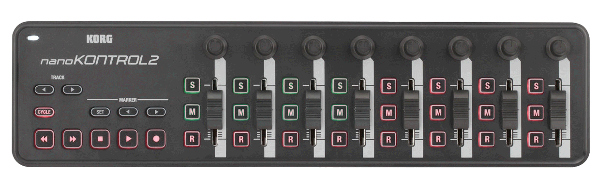

Video Director 4
Video Director 4 is a script designed to enable control of Wirecast 4 from a Korg nanoKONTROL2 midi control surface on MacOS X computers. The Korg nanoKONTROL2 is a low-cost solution to providing a tactile interface which, while not as elegant as a real production video switcher, provides much more tactile feedback than trying to control a video production with a mouse or touchpad.
In addition to simply providing real physical buttons for video switching operations, Video Director 4 also simplifies the process of populating the various control layers of Wirecast with video and graphic content. It will load layer content from a pre-defined directory structure on the host machine, allowing rapid re-configuration of Wirecast for programs with differing content requirements.
The functionality of Video Director 4 is limited by the very restricted subset of Wirecast operations for which Telestream has exposed a scriptable interface. The most obvious omission is that there appears to be no way to script the master audio level control, either through the Wirecast API or via System Events scripting. For a control surface such as the Korg NanoKontrol with its many sliders and knobs, this is a galling omission.
This version of Video Director 4 is not intended to be used with Wirecast 5.
Set-up
Begin by installing the midi drivers for the nanoKONTROL2. Downloadable drivers are on the Korg support web page, along with firmware updaters for the control surface. (Select nanoSERIES2 from the drop-down widget on that page).
From the same page, download the current version of the Korg Kontrol Editor. This program can be used to remap the midi control codes sent by individual controls on the device. This version of Video Director 4 uses the default factory code mapping, but you should use the "button behavior" option on the drop-down box to change the behavior of the Stop, Play, and Record buttons from "momentary" to "toggle". These are the buttons with control codes 42, 41, and 45 respectively.
MidiPipe
Next, install Nico Wald's MidiPipe. This program pipes control codes from the nanoKONTROL2 to AppleScript. MidiPipe is a strikingly useful utility for controlling all sorts of things from any midi control surface, not just the nanoKONTROL2. You'll find it useful for all sorts of projects. Please consider making a modest donation to Nico to ensure that we have MidiPipe for future revs of Mac OS. Most of his users are starving musicians, so supporting this product is especially important.
Content Directories
Unzip the Video_Director_4.zip file into your Documents directory. This will create a directory named VideoDirector and the following subdirectories:
- Audio
- Cameras
- Logos
- Media Player
- Scripts
- Titles
VideoDirector.wcst
Open Wirecast and do the following:
- Verify that your Broadcast settings are correct.
- Make sure there is a check-mark to the left of the first 5 items in the Layout Menu.
- Rename the Master Layers. From top to bottom they should be named "Titles", "Logos", "Cameras", "Audio", "Media Player". (You can rename a layer by double-clicking on the layer name).
- Set up any camera shots in the Cameras layer. This would include USB cameras and video capture devices.
Program Content
Next, populate the directories we created above with any non-camera shots you use in your program. The different directories are for holding specific kinds of content:
The Titles and Logos directories are used for graphics with transparent backgrounds. Items in these directories can be made to appear over your live camera shots. Since there are two such directories you can independently control two graphic overlays. If you have two items you wish to appear together place one in each directory.
The Cameras directory is normally empty because there is no file representation for a live camera. This is why we configured the camera and saved it in the "empty" VideoDirector.wcst file.
The Audio directory can be used for audio recordings, such as sound effects, that you want to include in your program. Live microphones could also be configured on the Audio Layer in Wirecast, but as with live cameras, there is no way to save those configurations anywhere except the "empty" Video Director 4.wcst file.
The Backgrounds directory is the place to put full-screen slides and any pre-recorded video segments you want to play during your program.
A note about naming files: Except for files in the Backgrounds directory, the first three files in each directory will be accessible at the press of a single button on the nanoKONTROL2. If you have more than three files for any one layer you may want to rename the files to ensure they are loaded in the proper order. You can prefix the file name with "1-", "2-", "3-". For the Backgrounds directory, the first seven files will have dedicated buttons assigned.
Operation
If you have not yet used the Korg configuration application to change the Stop, Play and Record buttons, to "toggle" mode, you should do that now. Consult the documentation that comes with the configuration program.
Plug your nanoKONTROL2 into your computer. Close Wirecast if it is open. Open the MidiPipe application and then open the file named VideoDirector4.mipi in the Scripts directory we created above.
Look for the two arrow buttons under the "Track" legend. Press the button pointing to the right and Wirecast will open. Click on the different layers and you should see the files you loaded into the layer directories. Press the button point to the left and Wirecast will close your layer media files.
Notice that there are three rows of identical buttons on the right two-thirds of the nanoKONTROL2. Each button in the top row is labeled "S", each button in the middle row is labeled "M", and each button in the bottom row is labeled "R". While we have five content layers in Wirecast, we only have three rows of buttons. We'll solve that by sharing two of the rows between four layters.
The top (S) row controls the Title and Logo layers. The four left "S" buttons control the Titles layer (we have tinted them green in the photo above). The four right "S" buttons, tinted red, control the Logos layer.
The middle (M) row controls the Camera and Audio layers. The four left "M" buttons, again tinted green in the picture, control the Cameras layer. The four right "M" buttons, tinted red, control the Audio layer.
The lower (R) row controls the Backgrounds layer. This row is not split and all eight buttons in this row can be used to control images in this layer.
The left-most button in each group selects the "Blank Shot" for that layer. That is to say, it makes that layer completely transparent and whatever is selected in lower layers shows through. The remaining three buttons in each of the groups in the first two rows, and the remaining 7 buttons in the "M" row select shots shown in the various layers.
The CYCLE button mimics the action of the GO button on the Wirecast screen, it takes whatever is showing in the preview window and moves it to the program window.
The three buttons in the MARKER group select which of the three transitions to use when moving a selected shot from preview to program. While it would be nice to be able to configure the transitions from the three transition drop-downs using one of the sliders, Wirecast does not expose those control widgets in the AppleScript interface.
We can, however vary the speed of the transitions. The leftmost slider and/or the leftmost knob can change the transition speed. Because it can be confusing to use both, we recommend you leave one of the two controls at it's minimum position and use the other to control transition speed. The speed icons (turtles and rabbits) will appear over the transition speed button as you move either of these controls.
The Stop button switches transitions in and out of "auto" mode. In "auto" mode the transition occurs immediately upon selecting a shot in a layer, without needing to press the CYCLE button. You will want to leave this off if you want to prepare a multi-layer shot such as a camera shot with title and logo overlays.
The Play button is used to start and stop the broadcast stream.
The Record button is used to start and stop recording. It also should have already been set to "toggle" mode.
The two remaining buttons are used to call Applescripts which are expected to be in the Scripts folder of the VideoDirector4 folder. These scripts are intended to be used to perform compound operations such as running the introduction and closing title sequences of programs, but you can use them to perform any scriptable action on the machine running Wirecast. Construction of these scripts is left as an exercise for the reader.
The Fast-Forward button triggers a script named "Intro.scpt" in the Scripts folder if one exists.
The Rewind button triggers a script named "Outro.scpt" in the Scripts folder if one exists.